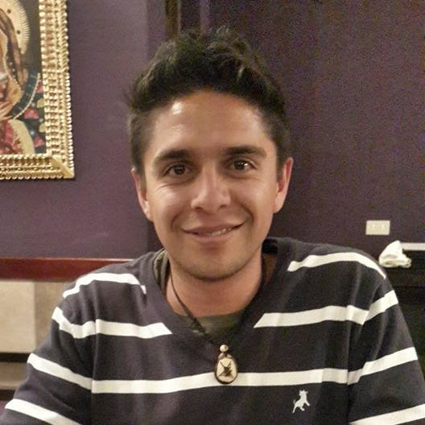

Información Personal
- Nombres: Camilo Andrés
- Apellidos: Laverde Peña
- Fecha Nacimiento: 1983/04/28
- Lugar Nacimiento: Bogotá DC, Colombia
Perfil
Ingeniero de sistemas con amplia experiencia en Programación Orientada a Objetos, bases de datos y desarrollo de software a la medida, principalmente aplicaciones Web Corporativas para diferentes sectores de la economía.
En total cuento con 12 años de experiencia en proyectos de ingeniería de software: 5 años como analista junior e intermedio, 4 y medio años como analista sénior con experiencia específica en liderazgo técnico y funcional de equipos de desarrollo, y 2 años y medio de experiencia como coordinador de construcción de software a cargo de definiciones de arquitectura de software, revisiones de diseño y código, planes de mejoramiento del área y liderazgo de equipos de desarrollo.
Especialista en Gerencia de Proyectos de Sistemas de Información, con conocimiento en dirección de proyectos bajo los estándares y guías de PMI.
Idiomas
- Inglés: Nivel Intermedio B1
- Español: Nativo